Let
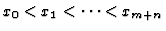
be m+n+1 distinct points, and let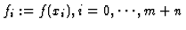
, where f(x) is an unknown function. They are changed to a set of dataThe classical algebraic problem of rational interpolation is to compute a pair of polynomials P(x) and Q(x) satisfying the relations
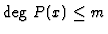
,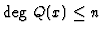
,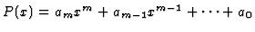
and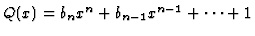
, then we can compute the values ai and bj for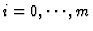
,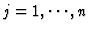
by solving the equations. However, there are two difficulties in which a rational function satisfying linearized equations would not be considered as a solution of the problem above: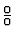
at xi, i.e. unattainable point.To avoid the difficulties, several rational interpolations have been proposed. One of them is called linear rational interpolation by Berrut and Mittelmann [2]. This interpolation has no unattainable points and no poles in the interval of the interpolation [x0,xm+n]. However, the degree of the approximation will become very high to obtain better approximation of f(x). Thus it is difficult to use the approximation in other hybrid applications, e.g. hybrid integral.
If Q(x) has zeros in [x0,xm+n], i.e. a rational interpolation has poles, and P(x) has close zeros to the zeros of Q(x), hybrid rational function approximation (HRFA) [4] based on symbolic-numeric hybrid computation is available to remove the poles in [x0,xm+n]. However, if unattainable points occur in the data set D, HRFA becomes ill-conditioned. Hereafter is a detailed discussion of HRFA.
In HRFA, the approximate-GCD by Sasaki and Noda [11] is used to remove the undesired poles in [x0,xm+n]. For the computation of approximate-GCD, the quantity
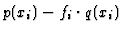
in general is different from zero (even if it may be closed to zero), where p(x) and q(x) are the numerator and denominator polynomials of rational function obtained by HRFA. We must estimate the accuracy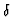
of the hybrid rational interpolation rk,l(x) as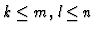
. is small positive real number.In this paper, we propose a method of the error estimation of HRFA. For this purpose, the approximate-GCD proposed by Hribernig and Stetter is used. HRFA and the approximate-GCD are briefly summarized in 2 and 3, respectively. In 4, We show a theorem of the accuracy of HRFA using the approximate-GCD. A symbolic-numeric hybrid example is shown in 5. The result satisfies the theorem.